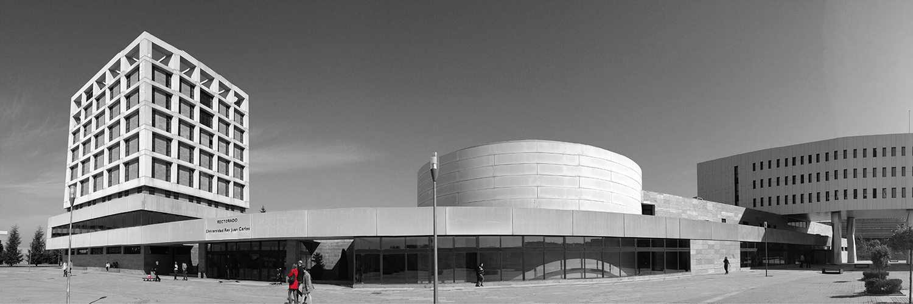

<!-- main-container start -->
<!-- ================ -->
<section class="main-container ">
	<div class="container">
		<div class="row">

			<!-- main start -->
			<!-- ================ -->
			<div class="main col-md-12">
				<div class="row">
					<div class="col-md-8 pl-30">
						<h1 class="title">Data Science Lab Blog</h1>

					</div>
					<!--
					<div class="col-md-4">
						<div class="col-side-pad">
							YOU HAVE A SIDE AREA HERE TO ADJUST ADDITIONAL CONTENT
						</div>
					</div>
					-->


							<!-- blogpost start -->
							<article class="blogpost">
								<div id="carousel-blog-post" class="carousel slide" data-ride="carousel">
									<!-- Indicators -->
<!--
									<ol class="carousel-indicators bottom margin-clear">
										<li data-target="#carousel-blog-post" data-slide-to="0" class="active"></li>
										<li data-target="#carousel-blog-post" data-slide-to="1"></li>
										<li data-target="#carousel-blog-post" data-slide-to="2"></li>
									</ol>
-->

									<!-- Wrapper for slides -->
									<div class="carousel-inner" role="listbox">
										<div class="item active">
											<div class="overlay-container">
												
												<a class="overlay-link" href="blog-post.html"><i class="fa fa-link"></i></a>
											</div>
										</div>
									</div>
								</div>
								
								<header>
									<h2><a">DSEXAMS: GENERACIÓN MASIVA Y AUTOMATIZADA DE CUESTIONARIOS ALEATORIZADOS MULTIPROPÓSITO</a></h2>
									<div class="post-info">
										<span class="post-date">
											<i class="icon-calendar"></i>
											<span class="day">6</span>
											<span class="month">Mar 2023</span>
										</span>
										<span class="submitted"><i class="icon-user-1"></i> by <a href="#">Isaac Martín de Diego</a></span>
									</div>
								</header>

								<div class="blogpost-content">
									<p>El DSLAB-TI ya está trabajando en el Proyecto de Innovación Educativa “DSEXAMS: GENERACIÓN MASIVA Y AUTOMATIZADA DE CUESTIONARIOS ALEATORIZADOS MULTIPROPÓSITO”.
Este proyecto tiene como objetivo crear y compartir un extenso repositorio de problemas en forma de cuestionarios. Consiste en la producción de una metodología de generación de cuestionarios aleatorizados sobre Ciencia de Datos, adaptados a cada nivel y titulación. De esta manera, se creará una gran colección de tipos de ejercicios con los cuales generar de forma automatizada un conjunto masivo de cuestionarios listos para que los docentes los puedan importar de manera sencilla a la plataforma Moodle. 
Con la incorporación de DSEXAMS en la plataforma educativa, los alumnos tendrán una potente oportunidad para su propia autoevaluación de los contenidos de la asignatura a través de una enorme variedad de cuestionarios que nunca se repiten, asegurando nuevos estímulos a medidas que van resolviendo los desafíos a los que se enfrentan. Así, se busca mejorar su rendimiento académico y su comprensión de las asignaturas relacionadas con la Ciencia de Datos en grados muy diversos.
Con este proyecto, el DSLAB_TI pretende proporcionar una nueva herramienta para generar más contenidos, difundirlos y compartirlos con la comunidad educativa.</p>
									<a href="https://dslab-website.s3.eu-central-1.amazonaws.com/Semana_Ciencia_2021___IH_al_rescate_IA.pdf"></a>
									
								</div>
								
										
								<header>
									<h2><a href="blog-post.html">XXI Semana de la Ciencia y la Innovación</a></h2>
									<div class="post-info">
										<span class="post-date">
											<i class="icon-calendar"></i>
											<span class="day">3</span>
											<span class="month">Nov 2021</span>
										</span>
										<span class="submitted"><i class="icon-user-1"></i> by <a href="#">Isaac Martín de Diego</a></span>
									</div>
								</header>

								
								
								
								<header>
									<h2><a href="blog-post.html">XX Semana de la Ciencia y la Innovación</a></h2>
									<div class="post-info">
										<span class="post-date">
											<i class="icon-calendar"></i>
											<span class="day">10</span>
											<span class="month">Nov 2020</span>
										</span>
										<span class="submitted"><i class="icon-user-1"></i> by <a href="#">Isaac Martín de Diego</a></span>
									</div>
								</header>

								<div class="blogpost-content">
									<p>Hoy nuestros compañeros del DSLAB han presentado su trabajo "Suficiencia Sanitaria y COVID-19" en la 20 edición de la Semana de la Ciencia y la Innovación. Enhorabuena por el trabajo realizado.</p>
									<a href="https://dslab-website.s3.eu-central-1.amazonaws.com/Suficiencia_Sanitaria_y_COVID_19.pdf"></a>
									
								</div>
								
								

								<header>
									<h2><a href="blog-post.html">Oferta de TFG y TFM. 2019-2020</a></h2>
									<div class="post-info">
										<span class="post-date">
											<i class="icon-calendar"></i>
											<span class="day">24</span>
											<span class="month">Mar 2020</span>
										</span>
										<span class="submitted"><i class="icon-user-1"></i> by <a href="#">Isaac Martín de Diego</a></span>
									</div>
								</header>
							    <p>Oferta de TFG y TFM del DSLAB para el curso 2019-2020</p>	
                                <ul>
                                    <li>SABERMED</li>
                                    <li>Evaluación de modelos de clasificación binaria y multiclase utilizando diferentes métricas.</li>
                                    <li>Clustering genéticos.</li>
                                    <li>Métricas para medir el solapamiento entre clases en problemas de clasificación.</li>
                                    <li>Datos simbólicos y su uso para la representación y clasificación de textos.</li>
                                    <li>Red neuronal para análisis de sentimiento en español.</li>
                                    <li>Soluciones software para datos desequilibrados.</li>
                                    <li>Sistema de recomendación de animes basado en grafos de conocimiento.</li>
                                    <li>Clasificación en tiempo real de patrones de comportamiento en ganado mediante análisis de series temporales.</li>
                                    <li>Métodos de reducción de la dimensionalidad como herramienta de diagnosis y evaluación de modelos de predicción.</li>
                                    <li>Time Series for Drift Detection.</li>
                                    <li>Métodos de reducción de la dimensionalidad y su proyección en el plano.</li>
                                    <li>Sistema de detección y clasificación de oportunidades en el sector viajes.</li>
                                    <li>User Behavior Analytics para detectar comportamientos anómalos y su implantación en sistemas de gestión de identidades.</li>
                                    <li>Red Neuronal para transferencia de estilos en imágenes de anime / manga.</li>
                                    <li>Plataforma de tráfico rodado.</li>
                                </ul>
                                <p>Puedes obtener más información en el siguiente <a href="https://dslab-website.s3.eu-central-1.amazonaws.com/DSLAB_Propuestas_TFG_TFM_2019_2020.pdf">link.</a></p>
                                <header>
									<h2><a href="blog-post.html">Oferta de TFG y TFM</a></h2>
									<div class="post-info">
										<span class="post-date">
											<i class="icon-calendar"></i>
											<span class="day">4</span>
											<span class="month">Dec 2018</span>
										</span>
										<span class="submitted"><i class="icon-user-1"></i> by <a href="#">Isaac Martín de Diego</a></span>
									</div>
								</header>
								<div class="blogpost-content">
									<p>Las ofertas del curso 2018-2019 para trabajo fin de grado y trabajo fin de máster en el DSLab son:</p>
									<ul>
										<li>Sistema de recuperación de información en páginas web del ámbito sanitario.</li>
										<ul>
											<li>Conocimientos básicos de web scraping.</li>
											<li>Python.</li>
										</ul>
										<li>Sistema para la evaluación de la imagen de marca.</li>
										<ul>
											<li>Machine Learning.</li>
											<li>Aprendizaje Profundo.</li>
											<li>Redes Neuronales.</li>
											<li>Visión por Computador</li>
										</ul>
										<li>Seguridad Informática mediante Machine Learning.</li>
										<ul>
											<li>Análisis del comportamiento de usuario.</li>
											<li>Aprendizaje Máquina.</li>
										</ul>
										<li>Ciencia de
Datos sobre el uso de aplicaciones móviles por parte de discapacitados intelectuales.</li>
										<ul>
											<li>Procesamiento de la información.</li>
											<li>Limpieza de datos.</li>
											<li>Aprendizaje Máquina.</li>
										</ul>
										<li>Organizador Automático de Comunidades Web.</li>
										<ul>
											<li>Extracción de la información web.</li>
											<li>Perfilado de usuarios.</li>
											<li>Aprendizaje Semi-supervisado.</li>
										</ul>
										<li>Detección de Fake news mediante técnicas de Minería de Texto y Aprendizaje Máquina.</li>
										<ul>
											<li>Mineria de Texto.</li>
											<li>Aprendizaje supervisado.</li>
										</ul>
										<li>Clustering Genético Distribuido</li>
										<ul>
											<li>Big Data</li>
											<li>Algoritmos Genéticos</li>
											<li>Aprendizaje nosupervisado.</li>
										</ul>
									</ul>

								</div>

								<header>
									<h2><a href="blog-post.html">Identidad de Marca</a></h2>
									<div class="post-info">
										<span class="post-date">
											<i class="icon-calendar"></i>
											<span class="day">3</span>
											<span class="month">Dec 2018</span>
										</span>
										<span class="submitted"><i class="icon-user-1"></i> by <a href="#">Isaac Martín de Diego</a></span>
									</div>
								</header>

								<div class="blogpost-content">
									<p>Nuevas carpetas del DSLab</p>
									
								</div>

								<header>
									<h2><a href="blog-post.html">Proyectos TFG y TFM</a></h2>
									<div class="post-info">
										<span class="post-date">
											<i class="icon-calendar"></i>
											<span class="day">24</span>
											<span class="month">Feb 2017</span>
										</span>
										<span class="submitted"><i class="icon-user-1"></i> by <a href="#">Isaac Martín de Diego</a></span>
									</div>
								</header>
								<div class="blogpost-content">
									<p>En el DSLab tenemos estudiantes realizando su trabajo fin de grado o de máster. ¿Quéres ser uno de ellos? Éstas son algunas de nuestras propuestas:</p>
									<ul>
										<li>Big Data en VideoVigilancia Inteligente.</li>
										<li>Machine Learning para el análisis de sentimientos en la web.</li>
										<li>Video Tagging con Deep Learning.</li>
										<li>Seguridad Informática mediante Machine Learning.</li>
									</ul>

								</div>
							</article>
							<!-- blogpost end -->
				</div>
			</div>
			<!-- main end -->

		</div>
	</div>
</section>
